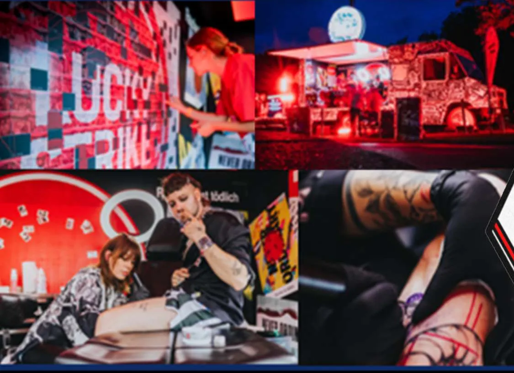

Work
I am a brand strategist. I am interested in what moves people and how brands live inside culture. Understanding those connections is how I build strategies that help a brand reach the people it wants and stay in their minds.
-
 No. 01 — Brand launch — Hamburg
No. 01 — Brand launch — HamburgMOR'KO Kombucha
Launching a kombucha brand in a market that thought kombucha was too healthy and too sour. Research, brand idea, naming, identity, packaging, shoot and launch activation.
Read the case → -

No. 02 — Rejuvenation strategy — GermanyLucky Strike
Making an iconic but dormant brand relevant again for people under 30, through self-expression rather than nostalgia.
Read the case →
What I do
Brand strategy
- Market research and brand audit
- Audience insights
- Brand story and key message
- Positioning
- Brand character and tone of voice
- Campaign development
Brand identity
- Naming, taglines and motto
- Tone of voice and communication matrix
- Visual identity: logo, colour, type
- Brand communication templates
- Brandbook
Creative direction
- Concept development
- Art direction
- Content direction
- Cross-platform consistency
- Production supervision